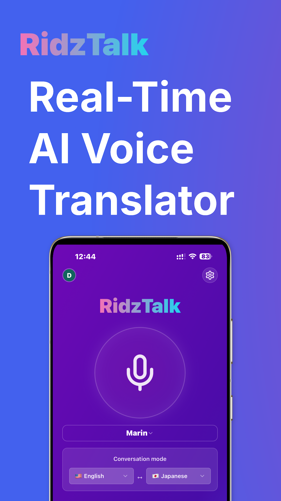

RidzTalk
Two-way AI voice translator
RidzTalk helps two people speaking different languages have a spoken conversation without typing messages back and forth. It combines speech transcription, translation, and voice playback, with language selection for both sides.
What I built
- A React and TypeScript interface for voice conversations.
- AI integration for transcription, translation, and speech playback.
- Supabase authentication and server-side functions.
- Mobile applications packaged for iOS and Android with Capacitor.
Technologies
- React
- TypeScript
- Vite
- Tailwind CSS
- Supabase
- OpenAI API
- WebRTC
- Capacitor